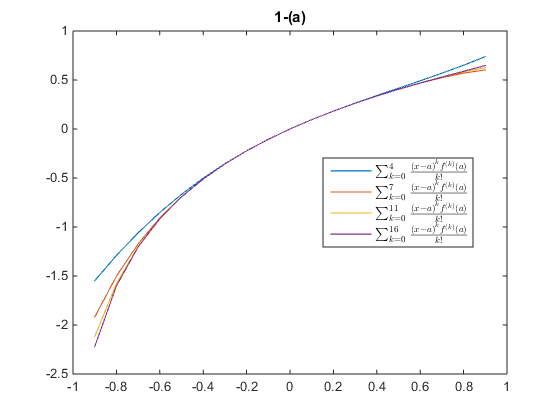
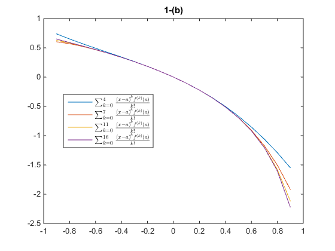
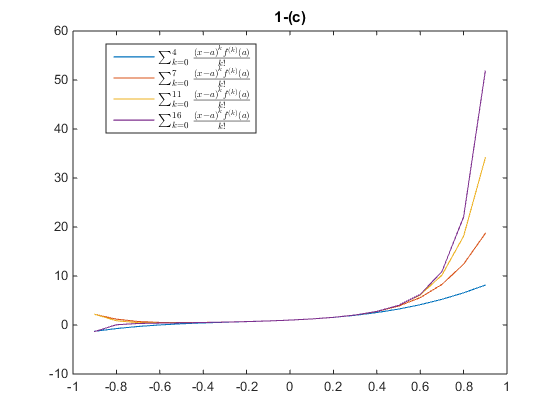
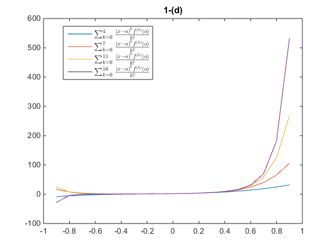
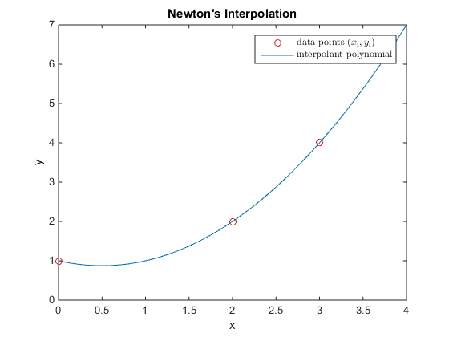
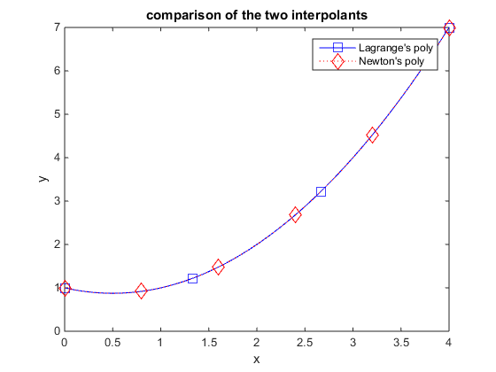

Lab 5 Solution: Hand-in only Ex. 4,5
Lab Instructor: Valeria Barra Friday Lab 02-27-2015, DUE Tuesday 03-03-2015 ; Monday Lab 03-02-2015, DUE Thursday 03-05-2015
Contents
First Problem: Taylor's Series with fixed order of accuracy
define f as symbolic function so that we can let MATLAB compute the derivative using the built-in function "diff"
clear all; close all; syms x; f={ log(1+x), log(1-x) ,1./((1-x).^2) , 2./((1-x).^3)}; % stores all symbolic functions for exercises (a)-(d) in a cell array n=[4,7,11,16]; % a cell array of strings that will be used for each title titlestrings={'1-(a)','1-(b)','1-(c)','1-(d)'}; a=0; % the center of Taylor's series. It allows for generality xx=-0.9:0.1:0.9; % the vector that is the domain of our polynomial for j=1:length(f) % this loops over the exercises (a)-(d) figure; P=zeros(1,length(xx)); for i=1:length(n) P(i,:)= TaylorOrder(f{j},x,xx,a,n(i)); plot(xx,P(i,:)) hold on LegendStrings{i,:}=['$\sum_{k=0}^{',num2str(n(i)),'}{\frac{{(x-a)}^k f^{(k)}(a)}{k !}}$']; end legend(LegendStrings,'Location','best','interpreter','latex','fontsize',10); title(titlestrings{j}) end   
Second Problem
The solution for second problem is practically a modification of my function TaylorOrder, but with a while loop instead of a for loop. You can refer to Problem no. 4 in the first Lab Wroksheet for a problem of that sort.
Third Problem: Regula Falsi
define now the symbolic function as a function handle
f=@(x)x.^2+exp(-x)*cos(x); x0=-3; x1=-2; tol=1e-5; [x,err]=RegulaFalsi(f,x0,x1,tol);
Fourth Problem: Lagrange's Interoplation (DUE)
the set of data points given in the problem
xi=[0 2 3]; yi=[1 2 4]; % the domain needed for plotting x=linspace(0,4,1000); p = LagrangeInterpolation(xi,yi,x); figure; % starts a new figure plot(xi,yi,'or'); hold on plot(x,p) title('Lagrange Interpolation') xlabel('x') ylabel('y') legend({'data points $(x_i,y_i)$','interpolant polynomial'},'interpreter','latex')
Fifth Problem: Newton's Interpolation
the set of the data points and the domain is the same as above we can compute the divided differences with the code provided in your textbook
DivDiff= DividedDiff(xi,yi); % now that we have the divided difference coefficients, we want to % construct the interpolating polynomial given by the formula with repeated % multiplications. prodterm=1; sumterm=0; for i=1:length(xi)-1 prodterm=prodterm.*(x-xi(i)); % the repeated product part of the formula sumterm=sumterm + DivDiff(1,i+1).*prodterm; % the sum part of the formula, with corresponding DivDiff coeff's and (x-xi) end sumterm = sumterm+DivDiff(1,1); % add the first term of the formula separately figure; plot(xi,yi,'ro') hold on plot(x,sumterm) title('Newton''s Interpolation') xlabel('x') ylabel('y') legend({'data points $(x_i,y_i)$','interpolant polynomial'},'interpreter','latex') % Now compare the two polynomials obtained with the two methods. They will % be overlapping, so to visualize that better, I use a function that is % available on the Mathworks website. Please see my Note.
Note: To plot lines with different markers (best for B/W printing of your work) but you don't want a line full of markers to distinguish the curve underneith, you can download this function from the MathWorks File Exchange. It is called "line_fewer_markers" the syntax to use it with is in my example. You just need to download the compressed folder and unzip it in your current folder where you are running your code from. http://www.mathworks.com/matlabcentral/fileexchange/42560-linefewermarkers/content/line_fewer_markers/line_fewer_markers.m
figure; line_fewer_markers(x,p ,4, '-bs'); % the third parameter is the number of markers line_fewer_markers(x,sumterm,6, ':rd'); title('comparison of the two interpolants') xlabel('x') ylabel('y') legend({'Lagrange''s poly','Newton''s poly'}) box on